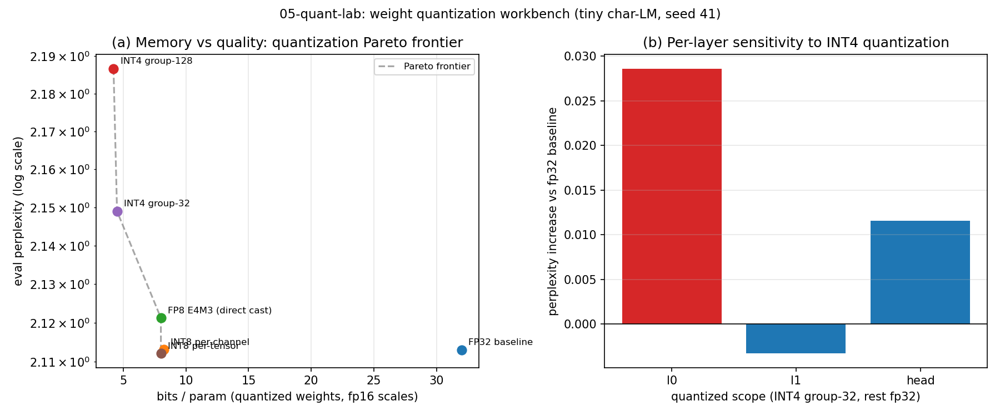

INT8/FP8/INT4 workbench with real perplexity degradation on a trained tiny LM
Serving an LLM is dominated by moving weights from memory to compute: a 70B model in fp16 needs ~140 GB just to hold the parameters, and every generated token streams those weights through the chip again. Quantization -- storing weights in INT8, FP8 or INT4 -- attacks that bottleneck directly, but every scheme trades bits for model quality, and the granularity of the scheme (per-tensor vs per-channel vs per-group) decides how gracefully it handles the outlier weights real LLMs develop.
Most quantization write-ups either quote vendor numbers or show toy round-trip error on random matrices. What is missing is a closed loop you can run on a laptop: train a real (if tiny) language model from scratch, quantize its actual trained weights with several schemes, and measure the end-to-end effect on language modeling quality -- with every step seeded and reproducible.
quant_lab is a self-contained quantization workbench in numpy (CPU only):
schemes.py -- symmetric per-channel INT8, per-tensor INT8 baseline, per-group symmetric INT4 (group sizes 32/128), and a faithful simulation of the OCP FP8 E4M3 grid (1 sign + 4 exponent + 3 mantissa bits, bias 7, saturating at +/-448, NaN pattern excluded). Each scheme returns dequantized float32 weights plus metadata (scales) and honest bit-rate accounting assuming fp16 scales.metrics.py -- relative L2 reconstruction error, SNR (dB), max-abs and mean-abs error.tiny_lm.py -- a minimal character-level transformer LM in pure numpy (d_model=64, 2 layers, 4 heads, d_ff=128, context 64, ~29-char vocab, ~74k params) with a handwritten forward/backward pass (finite-difference gradient-checked) and an Adam training loop.eval.py -- eval-set perplexity under quantization. Only Linear weight matrices are quantized; embeddings, norms and biases stay fp32 (embeddings are lookups, not matmuls; norms/biases are <1% of params -- the same split production pipelines use).experiments/run_experiments.py (seeded np.random.default_rng(41)) trains the LM once, then: (1) benchmarks reconstruction error on synthetic weight matrices with LLM-like outlier structure; (2) evaluates perplexity per scheme -- running the full eval sweep twice (weights reloaded from disk) to prove determinism; (3) sweeps per-layer sensitivity with INT4.
| Scheme | Eval perplexity | Bits/param |
|---|---|---|
| Baseline (fp32) | 2.1130 | 32 |
| INT8 per-channel | 2.1131 | 8.22 |
| FP8 E4M3 | 2.1212 | 8.00 |
| INT4 group-32 | 2.1490 | 4.50 |
| INT4 group-128 | 2.1867 | 4.22 |
74k-param char transformer trained from scratch (600 Adam steps, seed 41); eval run twice bit-identical. On outlier-structured synthetic weights, per-tensor INT8 has ~8x worse reconstruction error than per-channel — granularity exists to tame outliers.

experiments/run_experiments.py — re-running reproduces these exactly.Full tables: [results/results.md](results/results.md).
src/llm_inference_engine/quant_lab/
schemes.py # INT8 per-channel/per-tensor, FP8 E4M3, INT4 per-group
tiny_lm.py # from-scratch char LM (numpy, Adam)
eval.py # perplexity under quantized weights
05-quant-lab/
experiments/run_experiments.py # train once, eval twice, sensitivity
results/ # results.md + charts.png (generated)
Full source, tests, and experiment code: 05-quant-lab/ ·
Run: cd 05-quant-lab && python3 experiments/run_experiments.py